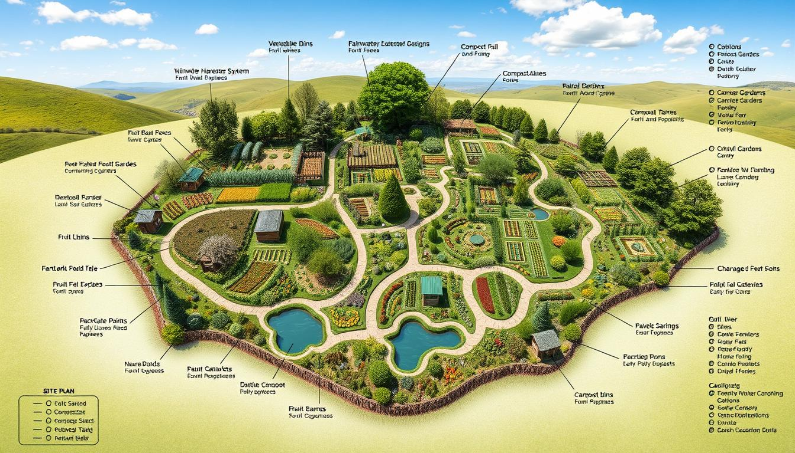

Permaculture / Polyculture
The "Self-Sustaining" Model: Mimicking natural forests to create resilient, low-labor ecosystems.
1. Site Feasibility & Zoning
🎯 Zoning Concept
Zone 0-5.
Permaculture relies on placing elements based on frequency of use. Zone 1 (Herbs/Veg) is near
the house; Zone 5 (Wilderness) is untouched.
🌍 Diversity
Polyculture Essential.
You cannot plant a monoculture. You need a mix of Trees (Canopy), Shrubs, Roots, and Ground
Covers to fill every niche.
💧 Water Harvesting
Swales.
Digging trenches on contour (Swales) to slow, spread, and sink rainwater into the soil is a
prerequisite before planting.
2. Infrastructure: The "Guild"
In Permaculture, we plant "Guilds"—families of plants that help each other.
🚧 The Classic Fruit Tree Guild
- Center: Fruit Tree (e.g., Apple/Mango) - The Product.
- Nitrogen Fixer: Legume plant (e.g., Beans/Acacia) - Feeds the tree.
- Accumulator: Deep root plant (e.g., Comfrey) - Mines minerals from deep soil.
- Mulch Plant: Pumpkin/Sweet Potato - Covers soil to retain moisture.
3. The Nutrient Cycle
The "Chop and Drop" method eliminates the need for external fertilizer.
Plants grow Biomass
Cut plants; leave on soil
Worms eat Mulch
Absorb Nutrients
4. Operational Calendar
Permaculture focuses on Perennials (plants that live for years), reducing replanting labor.
Observe the land. Dig swales to catch water. Plant pioneer nitrogen-fixing trees to improve soil.
Plant your main fruit trees. Surround them with supporting guilds (herbs, flowers, pest repellents).
"Chop and Drop". Prune the fast-growing nitrogen trees and drop the branches around the fruit trees as instant fertilizer.
Canopy closes. Weeds disappear. Harvest fruits, nuts, and medicinal herbs. System becomes self-maintaining.
5. Risks & Solutions
⚠️ RISK: COMPLEXITY
Analysis Paralysis. Trying to manage 100 species at once can be overwhelming. Solution: Start with Zone 1 (Kitchen Garden) and expand slowly.
| Problem | Solution |
|---|---|
| Invasive Species | Some hardy plants (like Mint/Bamboo) take over. Plant them in pots or contained areas. |
| Slow ROI | Trees take years to yield. Intercrop with annual vegetables (Radish/Spinach) for quick cash. |
6. Economics
💰 Zero Input
- Fertilizer: $0. Grown on site (Comfrey/Acacia).
- Pesticide: $0. Predatory wasps and frogs control pests.
- Water: Reduced by 50% due to Swales and heavy Mulching.
🛡️ Ultimate Resilience
- Diversity: If one crop fails due to pests, 10 others will thrive. You never have a "total loss".
- Market Shield: You grow food, medicine, and fuel. You are less affected by market price crashes.